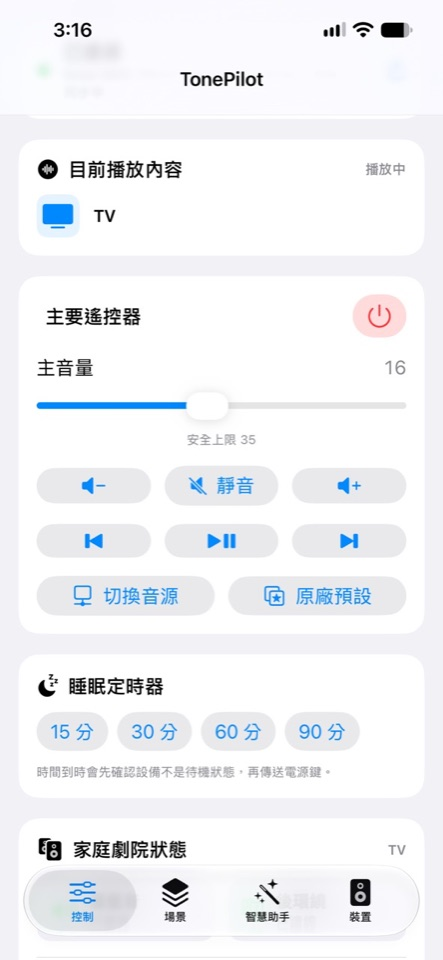
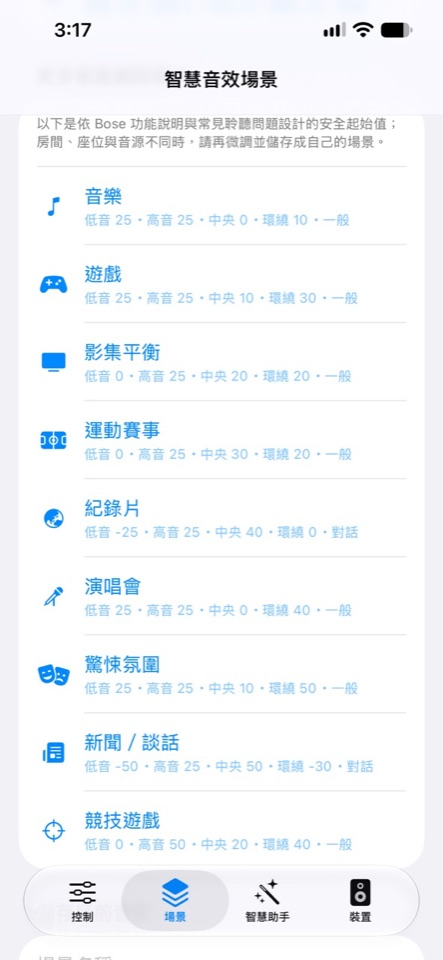
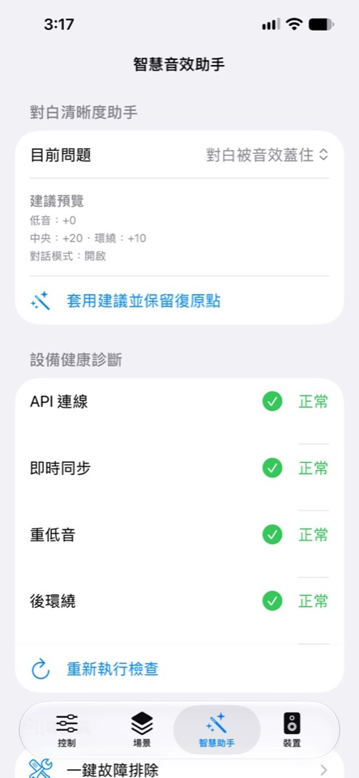
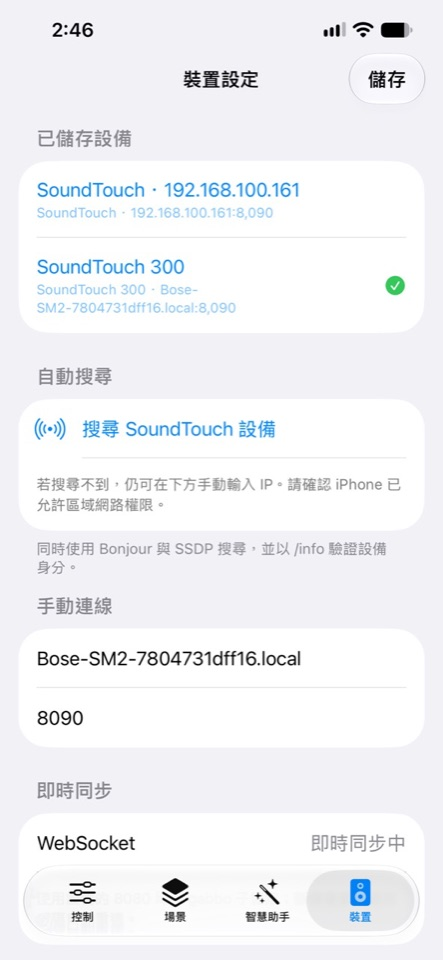
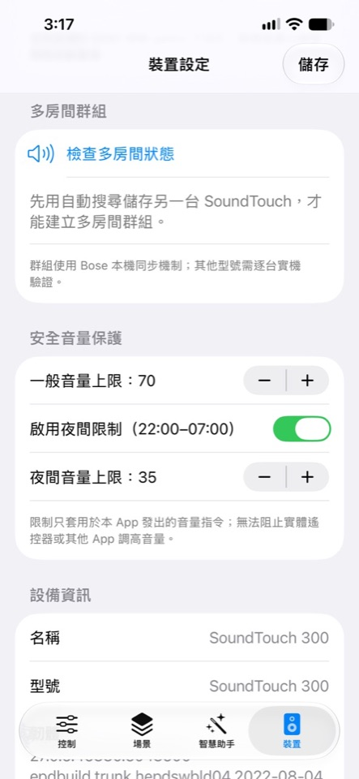
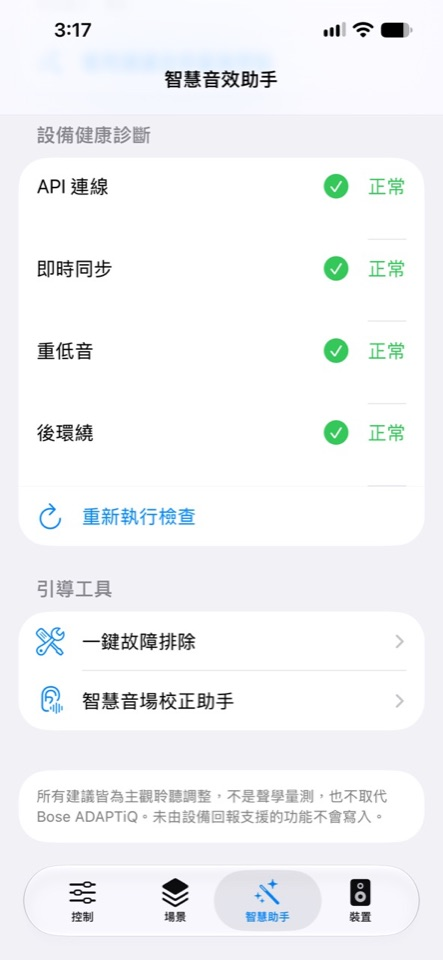

區域網路自動搜尋
透過 Bonjour 與 SSDP 尋找設備，也保留手動 IP；設備位址改變後可重新探索。
所有功能會先讀取設備能力，不支援的控制不會假裝可用。
透過 Bonjour 與 SSDP 尋找設備，也保留手動 IP；設備位址改變後可重新探索。
提供電源、音量、靜音、播放控制、可用音源切換與原廠 Preset 快捷鍵。
在支援設備上調整低音、高音、中央聲道、後環繞及對話增強模式。
電影、動作、人聲、深夜、音樂、遊戲等安全起始值，也能建立自己的場景。
檢查 API、即時同步、重低音、後環繞與設備能力；未取得的狀態不臆測。
使用 WebSocket 接收狀態變更，重新讀取實際音量、音源與音效設定。
比較兩組音效、揭曉結果，並可恢復比較前設定，降低反覆調音的負擔。
設定一般與夜間音量上限。限制只套用於 TonePilot 發出的音量指令。
提供 15、30、60、90 分鐘快捷選項，到時先確認設備狀態再送出待機指令。
依照控制、場景、智慧助手與裝置四個工作情境整理，避免把所有功能塞進同一頁。





